Observa los siguientes vídeos para tener una idea de la parábola.
¿Qué es la parábola?
 La parábola como lugar geométrico: Es el lugar geométrico que describe un punto P que se mueve en el plano de tal manera que equidistan de un punto fijo F el cual se llama foco y una recta fija d llamada directriz.
La parábola como lugar geométrico: Es el lugar geométrico que describe un punto P que se mueve en el plano de tal manera que equidistan de un punto fijo F el cual se llama foco y una recta fija d llamada directriz.
Un punto P está en la parábola si y sólo si las distancias d(P, F) y d(P, d) son iguales. El eje de la parábola es la recta que pasa por F y es perpendicular a la directriz. El vértice de la parábola es el punto V sobre el eje situado a media distancia entre F y d. El vértice es el punto en la parábola más cercano a la directriz.
Podemos denotar la definición de parábola en forma de conjunto de la siguiente manera: P(d, F ) = {P/ d(P,d) = d(P, F)}
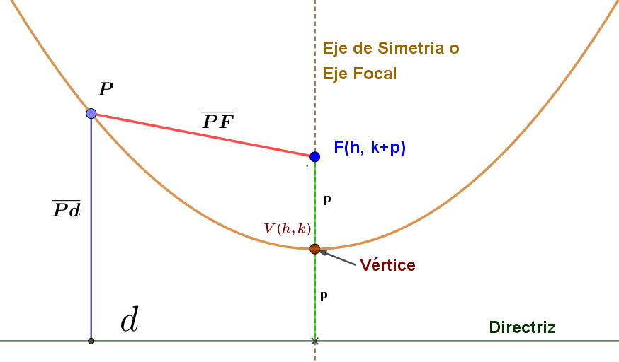
Elementos de la Parábola
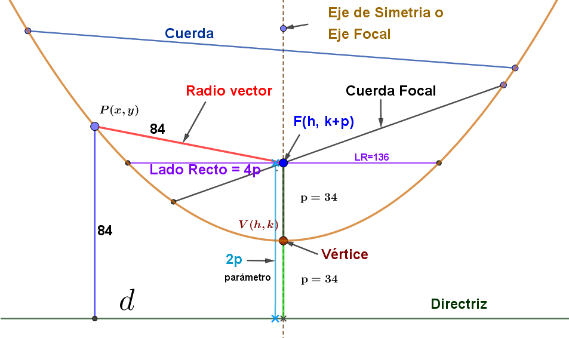
- Foco: el foco F es el punto fijo. Los puntos de la parábola equidistan del foco y la directriz.
- Directriz: es la recta fija d. Los puntos de la parábola equidistan de la directriz y el foco.
- Radio vector: es el segmento R que une el foco con cada uno de los puntos de la parábola. Es igual al segmento perpendicular a la directriz desde el punto correspondiente.
- Eje focal: es la recta perpendicular a la directriz que pasa por el foco F y el vértice V. Es el eje de simetría de la parábola.
- Parámetro: p es la distancia entre el foco y el punto más próximo de la directriz.
- Vértice: es el punto V de la intersección del eje focal y la parábola.
- Distancia focal: distancia entre el foco F y el vértice V. Es igual a p/2.
- Puntos interiores y exteriores: la parábola divide el plano en dos regiones. Los puntos que están en la región del foco se llaman puntos interiores, mientras que los otros son los exteriores.
- Cuerda: segmento que une dos puntos cualesquiera de la parábola.
- Cuerda focal: una cuerda que pasa por el foco F.
- Lado recto: Cuerda focal paralela a la directriz d y, por tanto, perpendicular al eje focal.
Ecuación de la parábola con vértice en el origen y eje focal vertical
Para obtener la ecuación de la parábola vertical, con vértice en el origen V(0,0) y el foco sobre el eje y de coordenadas (0,p), ( con p > 0), y la ecuación de la directriz es y = -p (ver figura).
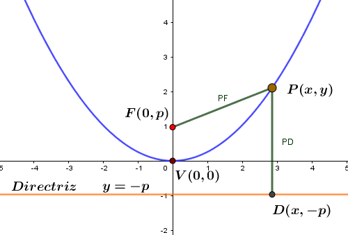
Un punto P(x, y) está en la gráfica de la parábola si y sólo si d(P, F) = d(P,D); reemplazando en la fórmula de la distancia tenemos:
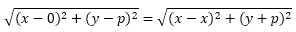
Elevando al cuadrado ambos miembros de la ecuación y simplificando obtenemos la ecuación de la parábola con vértice en el origen y con eje focal que coincide con el eje y
. 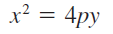
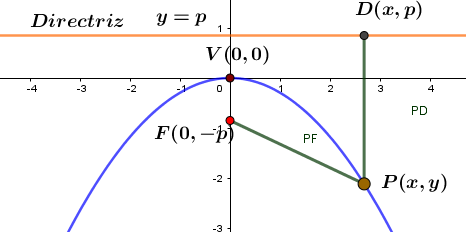 Si variamos el signo del parámetro p (p < 0) obtenemos el gráfico de la izquierda. En conclusión para determinar la concavidad de una parábola es necesario analizar lo siguiente:
Si p>0 entonces la parábola abre hacia la arriba.
Si p<0 entonces la parábola abre hacia abajo.
En resumen tenemos:
|
Ecuación canónica: 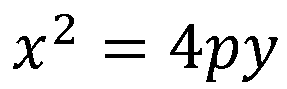 |
Foco: F(0, ±p) |
Directriz: y= ± p |
Ecuación con el eje: x = 0 |
Lado Recto: 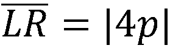 |
|
Ecuación canónica: 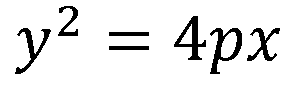 |
Foco: F(p, 0) |
Directriz: x= -p |
Ecuación con el eje: y= 0 |
Lado Recto: |
Ecuación de la parábola con eje de simetría paralelo a uno de los ejes coordenados y vértice de coordenadas V(h,k)
Para obtener la ecuación de la parábola con vértices de coordenadas (h,k) y de eje focal paralelo a cualquiera de los ejes coordenados seguimos los mismos pasos anteriores y obtendremos las siguientes ecuaciones que resumimos a continuación
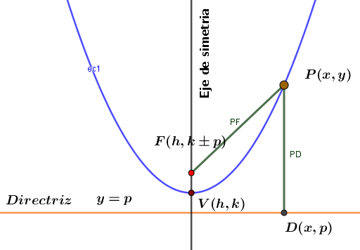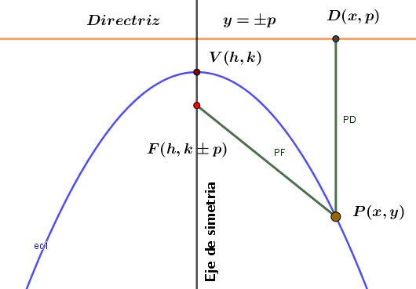
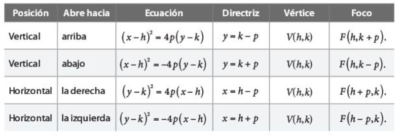
Si p>0 entonces la parábola abre hacia arriba.
Si p<0 entonces la parábola abre hacia abajo.